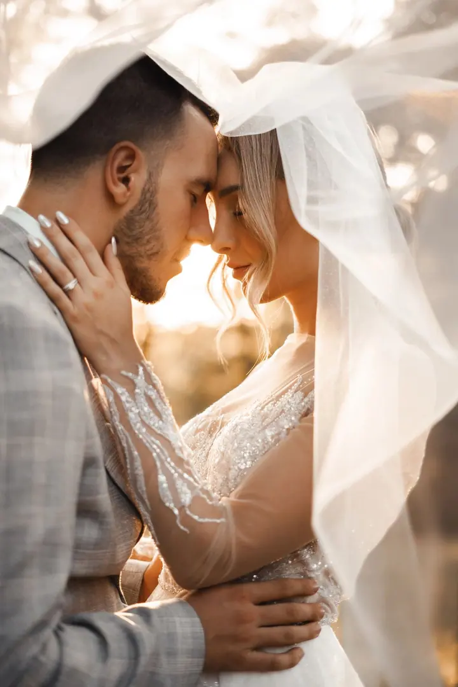
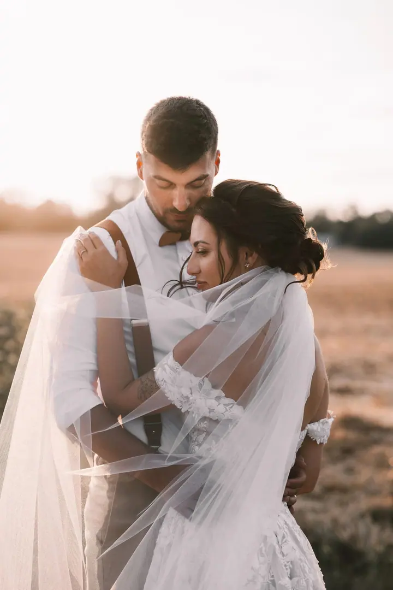
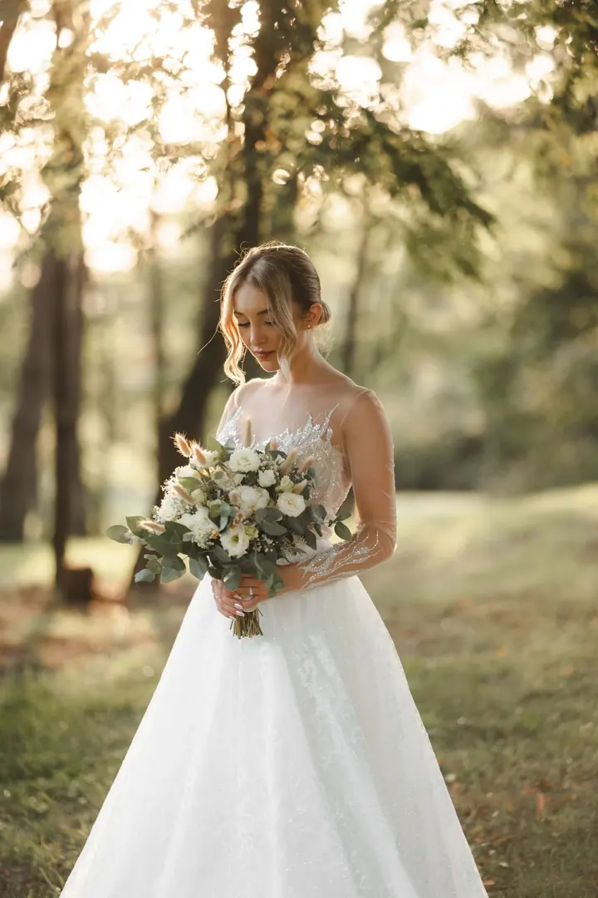

jedna
Svatební focení + svatební video
Jako sehraný tým foto a video zachytíme váš svatební den celý a v jednotném stylu. Vznikne ucelený příběh, ve kterém se fotky a video navzájem doplňují.


Jmenuji se Lucie Nádeníčková a fotím svatby v Brně i po celé republice. Spolu s Martinem, který točí video, tvoříme tým LN weddings. Zajímá nás hlavně atmosféra, emoce a přirozené chvíle, ke kterým se budete rádi vracet.
Více o mně
Co dělám
jedna
Jako sehraný tým foto a video zachytíme váš svatební den celý a v jednotném stylu. Vznikne ucelený příběh, ve kterém se fotky a video navzájem doplňují.
dvě
Fotím reportážním stylem, citlivě a nenápadně. Chci, aby fotky co nejvěrněji odrážely skutečný průběh vaší svatby i její náladu.
Video točíme ve filmovém stylu a stavíme ho na emocích, atmosféře a příběhu. Dostanete kratší cinematic klip i delší svatební film.
Je to příjemné seznámení s focením i mezi námi, díky kterému budete na svatbě klidnější. Zároveň vám zůstane památka na zásnuby a fotky pro svatební tiskoviny.
Každá svatba má svůj vlastní rytmus


Za objektivem
Při svatebním focení mi jde hlavně o atmosféru a emoce. Chci vám fotkami odvyprávět skutečný příběh vašeho velkého dne. Každá svatba má svůj rytmus, energii a náladu a já se je snažím zachytit citlivě a nenápadně.
S Martinem Vaňkem, který se stará o video, pracujeme jako sehraný tým. Fotíme a natáčíme reportážním stylem, aby fotky i video co nejvěrněji ukazovaly, jak den doopravdy proběhl. Věříme, že vzpomínky, ke kterým se lidé nejraději vracejí, vznikají v přirozených a nenucených chvílích.
Při portrétech novomanželů nechceme nic aranžovat. Záleží nám na jednoduchosti, uvolněné atmosféře a na tom, aby bylo vidět, jak k sobě máte blízko.
Lucie
Vyplňte kontaktní formulář s termínem a místem svatby. Rádi zodpovíme vaše dotazy a pošleme informace o cenách a obsahu balíčků.
Pokud o něj máte zájem, poznáme se na předsvatebním focení. Zvyknete si na objektiv a na svatbě pak budete víc v pohodě.
Fotíme a natáčíme reportážním stylem, citlivě a nenápadně. Na portréty novomanželů si najdeme chvíli v klidu a bez aranžování.
Dostanete fotky, které odpovídají skutečnému průběhu dne. K videu kratší cinematic klip a delší svatební film.
Portfolio
Otázky
Ano. Nabízíme svatební focení i svatební video samostatně, nebo obojí jako kompletní balíček.
Jsme z Brna, ale za svatbami jezdíme po celé České republice.
Cenu a obsah jednotlivých balíčků vám rádi pošleme. Stačí nám napsat přes kontaktní formulář.
I to jde. Napište nám do zprávy, jak dlouhé focení nebo natáčení si představujete, a domluvíme se.